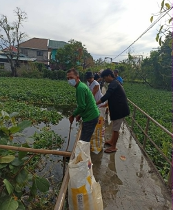
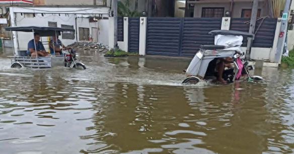

RAMILO USI
Ako ay limampu’t anim na taong gulang at sampung taon nang naglilingkod sa barangay. Sa tuwing bumabaha, namimigay kami ng relief goods kahit gaano pa kalalim ang tubig—minsan ay umaabot pa sa baywang. Hindi namin alintana ang panganib, basta’t maihatid ang tulong sa pinakaliblib na bahay. Madalas din akong sumama sa pagputol ng mga punong natumba o nagbabanta ng panganib, at kung minsan ay tumutulong sa konstruksyon o sa trucking.

Bilang lider ng sitio sa Danga, madalas akong lapitan ng mga tao tuwing masama ang panahon. May mga humihingi ng tulong upang patibayin ang kanilang bahay laban sa lakas ng hangin, at may mga tumatawag kapag may kailangang dalhin sa ospital o may alitan sa gitna ng bagyo. Isang beses, inatasan akong magwisik ng kemikal sa mga halamang kangkong sa sapa. Mag-isa ako noon, at sa kamalas-malasan ay nadulas ako at nabuhusan ng kemikal. Masakit man, matapos kong gamutin ang sugat ay nagpatuloy pa rin ako sa trabaho. Dalawang araw ang lumipas, nagpa-X-ray ako dahil sa matinding pananakit, at isang linggo akong nilagnat. Bumili ako ng sariling gamot at protective gear, dahil kahit ang mga boots ay pinapasok ng baha.
Apat na beses lamang kami tumutungo sa barangay bawat buwan, at tinatawagan kapag may bagyo. Sa mga araw na walang operasyon, bumabalik ako sa aking hanapbuhay bilang tricycle driver. Ngunit tuwing may bagyo, lubos itong naaapektuhan—dalawang beses ko nang naranasang itulak ang aking tricycle habang may sakay na pasahero, maihatid lamang sila sa mataas na lugar. Pagdating namin sa tuyong bahagi, pasok na ang tubig sa makina. Iyon ang hirap na dinaranas ko bilang isang karaniwang residenteng nakikipagsabayan sa unos.

Sa kabila ng lahat, hinihikayat ko ang mga nakakausap ko na magboluntaryo rin. Dahil sa gitna ng bagyo, lahat tayo ay nagdurusa. Ngunit kung mas marami ang tutulong, mas magiging magaan ang laban. Sa huli, ang tunay na lakas ng komunidad ay nasusukat sa kung paano tayo nagkakapit-bisig sa harap ng unos.